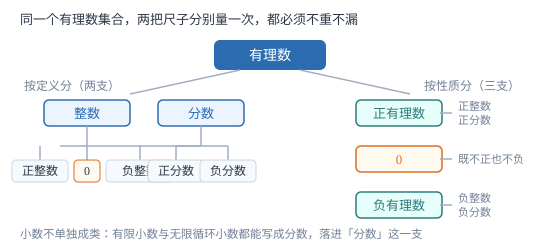

有理数的概念与分类
有理数的判据只有一条——能否写成两个整数之比；「有限」「循环」是这条判据的两种外观，「无限」不等于「无理」。
| 所属主题 | 有理数 |
|---|---|
| 所属模块 | 代数 |
| 课标学段 | 第四学段（7~9 年级） |
| 前置知识 | 正数与负数 |
| 核心素养 | 抽象能力推理能力 |
教材定位
人民教育出版社《人教版（2024版）义务教育教科书·数学》
七年级上册第1章 有理数1.2 有理数及其大小比较
对应七上 1.2 有理数及其大小比较中的「有理数的概念」课时。教材按定义分类；本篇补上按性质分类，并把「有限小数、无限循环小数都是有理数」这条判据讲透，因为它是后面判断无理数的唯一依据。
说明
整数和分数统称有理数。整数包括正整数、0、负整数，分数包括正分数、负分数。判据只有一条：能写成两个整数之比 p/q（q≠ 0）的数就是有理数。按这条判据，有限小数是有理数，因为 0.25=1/4；无限循环小数也是有理数，因为 0.\overline3=1/3。三类写法说的是同一批数。
同一个集合可以按不同的尺子分。按定义分，得整数与分数两支；按性质分，得正有理数、0、负有理数三支。两把尺子都必须做到不重不漏：按定义分时，一个数不能既是整数又是分数；按性质分时，0 必须单列，因为它既不正也不负。把这批数填进分类表时，先想清楚题目用的是哪把尺子，再往下填。
使用场景
最常见的是「把下列各数填入相应的集合」和「下列说法正确的是」两类题。前者考分类表，后者考边界：无限小数是否都是无理数、π/3 是不是分数、0.\overline3 是不是有理数。
实际情境里的数也要判：测量得到的 2.5 厘米是有限小数，属于有理数；统计表里的百分比 3.7% 写成 0.037 也是有限小数；工程上写 1/3 的余量则是分数。判断时不要被「%」「厘米」这些单位干扰，先把单位剥掉看纯数。
注意点
「无限」与「无理」是两件事。0.\overline3 小数点后无限位，但每步都循环，所以它是有理数；π=3.14159\ldots 无限且不循环，才不是有理数。判断时看的是有没有循环节，不是看位数多不多。
「分数」在有理数分类里指的是「能写成两个整数之比的数」，不是「长得有分数线」。2.5 没有分数线，但 2.5=5/2，按定义属于分数这一类；反过来 π/3 有分数线，却不是分数，因为分子不是整数。
证明

图 1：同一个有理数集合，按定义分与按性质分是两把不同的尺子，两把尺子都必须不重不漏
证明
结论 1无限循环小数一定能写成两个整数之比，所以它属于有理数。以 0.\overline3 为例，它等于 1/3。
设 x=0.\overline3=0.333\ldots，两边同乘 10 得 10x=3.333\ldots。用后者减前者：10x-x=3.333\ldots-0.333\ldots，左边是 9x，右边小数点后的部分完全一样、逐位相消，只剩 3。于是 9x=3，解得 x=1/3。
关键一步依据是「错位相减消掉无限部分」：循环节长度决定乘 10 的几次方（循环节 1 位乘 10），相减后无限位消失，只剩整数方程，解出来就是分数形式。
结论 2按性质分类时 0 必须单列，不能并入正有理数或负有理数。
若把 0 归入正有理数，则「负有理数与 0」这一类就重复包含了 0；若归入负有理数，「正有理数与 0」又重复。而 0 既不表示比基准高也不表示比基准低。把 0 单列成第三支后，正有理数、0、负有理数互不重叠，合起来正好是全部有理数。
关键一步依据是分类要不重不漏：三支互斥且穷尽才能作为分类标准；0 归入任一侧都会造成重叠。
结论 3π 不是有理数，因此含 π 的式子如 π/3 也不是有理数。
第一条结论反过来用照样成立：不能化成有限小数或无限循环小数的数，必定写不成两个整数之比。π=3.14159265\ldots 的小数部分既不终止也不循环，所以它不能写成两个整数之比。又因为有理数乘除以非零有理数后仍是有理数，若 π/3 是有理数，则 π=3\cdotπ/3 也应是有理数，与前述矛盾，所以 π/3 也不是有理数。
关键一步依据是「有理数化成小数必定有限或循环」与「不循环的都不是有理数」说的是同一件事的正反两面：再用有理数对除法封闭这一条，把结论推广到含 π 的式子。
动手实验
用计算器依次算 1÷ 3、1÷ 7、1÷ 8，把显示的小数抄下来：1÷ 8=0.125 停下了，是有限小数；1÷ 3=0.333\ldots 从第一位起循环；1÷ 7=0.142857142857\ldots 六位一循环。再把 0.\overline3 乘 3 得 0.999\ldots，而 1/3× 3=1，两条路都指向 1，说明 0.\overline9 与 1 是同一个数。
解题思路
判断一个数是不是有理数，按四步走。第一步看外形：整数、分数、有限小数，直接判为有理数。第二步看小数部分是否循环：无限但带循环节，仍是有理数。第三步看根号：能开得尽的是有理数，例如 \sqrt16=4；开不尽的是无理数。第四步看特殊结构：π 及其与非零有理数的积商是无理数；形如 0.1010010001\ldots 这种位数递增却不循环的，也是无理数。
填分类表时先定尺子。题目说「按定义分类」，就只填整数、分数两支，不出现「正」「负」字样；说「按性质分类」，就填正有理数、0、负有理数三支。填完做两件事复核：数一数总个数有没有变（防漏），再看有没有同一个数被填进两栏（防重）。
按场景的例题
例 1（场景：数据调查） 整理一组调查数据并归类
把下列各数填入相应的集合：-3、0、3/4、-0.5、2.5、-1/3、7、0.\overline3。分别写出整数集合、分数集合与正有理数集合。
解：按定义分：整数是 -3、0、7；分数是 3/4、-0.5、2.5、-1/3、0.\overline3。其中 -0.5=-1/2、2.5=5/2 都是有限小数，0.\overline3=1/3 是无限循环小数，三者都能写成两个整数之比，所以归入分数。按性质分，正有理数是 3/4、2.5、7、0.\overline3，负有理数是 -3、-0.5、-1/3，剩下的 0 单列。两把尺子一共覆盖 8 个数，与题给个数一致。
答：整数：-3、0、7；分数：3/4、-0.5、2.5、-1/3、0.\overline3；正有理数：3/4、2.5、7、0.\overline3。
例 2（场景：测量与工程） 零件尺寸与允许误差
某零件图纸标注长度为 2.5 厘米，允许误差 0.02 厘米。把这两个数写成最简分数，并说明它们属于有理数中的哪一类。
解：2.5 小数点后一位，写成分数时分子是 25、分母是 10，约分得 5/2；它是正数，所以属于正分数，也就是正有理数。0.02 小数点后两位，写成 2/100，约分得 1/50，同样是正有理数。两个数都是有限小数，都能写成两个整数之比，因此都在有理数范围内；图纸上写小数是为了方便读数，不改变它的类别。
答：2.5=5/2，0.02=1/50，二者都是正有理数。
例 3（场景：金融与增长） 存款年利率的表示
某银行一年期存款年利率为 3.7%。把 3.7% 化为小数并写成最简分数，判断它是不是有理数；若有人把它写成 0.037037\ldots（037 循环），这个数还是有理数吗？
解：3.7% 表示千分之三十七，即 0.037，是有限小数。写成最简分数：0.037=37/1000，37 与 1000 互质，已是最简，所以它是有理数。若写成 0.\overline037，它是无限循环小数，按循环小数化分数的方法（循环节 3 位，乘 1000 后错位相减）可得 0.\overline037=37/999，仍是有理数。两条路都落在有理数集合内，只是数值不同。
答：3.7%=0.037=37/1000，是有理数；0.\overline037=37/999 也是有理数。
常用推论
一切整数都是有理数：整数 a 可写成 a/1，符合「两个整数之比」。反过来不成立，1/2 是有理数但不是整数。
两个有理数做加、减、乘、除（除数不为 0），结果仍是有理数。这条封闭性是有理数四则运算能自成体系的前提。
小数与有理数的对应关系：有限小数、无限循环小数都是有理数；无限不循环小数不是有理数。判断只需看两点——是否终止、是否循环。
易错点
错认为所有无限小数都是无理数。
为什么错把「位数无限」当成「不循环」，漏掉了循环节这一关键特征。
正确0.\overline3 位数无限，但它的循环节是 3，0.\overline3=1/3，是有理数。只有无限且不循环的才不是有理数。
错认为只有带分数线的数才算分数，于是把 2.5 判为「既不是整数也不是分数」。
为什么错用外形代替定义。分类里的「分数」指的是能写成两个整数之比的数，不是写法上有没有分数线。
正确2.5=5/2，按定义属于分数（正分数），因此也是正有理数。
错按性质分类时漏掉 0，或把 0 同时填进正有理数与负有理数两栏。
为什么错只想到正负两支，忘了 0 是分界点，既不正也不负。
正确按性质分必须写成三支：正有理数、0、负有理数。填完核对总数，漏填或重复都能立刻发现。
直观理解
把有理数想成一张网：凡是能用「整数除以整数」这张网捞上来的数，都在网里。整数是分母为 1 的那一批，有限小数是分母为 10、100 的那一批，无限循环小数是把循环节错位相减后能落到分母为 9、99、999 的那一批。π 捞不上来，因为它的小数永远不循环，分母写不出来。